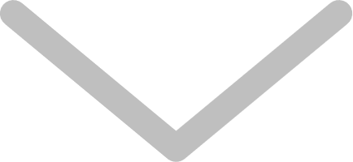

<div id="flip" class="need_show">
    <!--<i class="layui-icon layui-icon-down" style=" width:20%;font-size: 30px; color: #808585F0;"></i>-->
    
</div>
<div id="show_map">
    <div id="container"></div>
</div>
<div id="panel" class="control"></div>
<div class="control">
    <h4>左击获取经纬度：</h4>
    <div class="input-item">
        <input type="text" readonly="true" id="lnglat">
    </div>
</div>
<div class="info" style="display: none">
    <h4 id='status'></h4><hr>
    <p id='result'></p><hr>
</div>
<div>
    <button id="settings-map" class="layui-btn layui-btn-normal layui-btn-sm control">地图查询</button>
    <input id="addMarker" type="button" class="btn control" onclick="addMarker()" value="设置酒店位置">
    <div style="display: none" id="position">113.110045,27.817785</div>
</div>
<script>
    var $,layer;


    layui.use(['jquery','layer','upload'], function() {
        $ = layui.jquery;
        layer = layui.layer;

        var xy = $("#position").html().split(',');
        //点击显示地图
        $("#flip").click(function(){
            var show_map=$("#show_map");
            show_map.animate({height:'200px'},"slow");
            $("#flip").hide();
        });

        var map = new AMap.Map('container', {
            resizeEnable: true, //是否监控地图容器尺寸变化
            zoom:11, //初始化地图层级
            center: [xy[0],xy[1]] //初始化地图中心点
        });

        //设置鼠标样式为十字
        map.setDefaultCursor("crosshair");

        AMap.plugin('AMap.Geolocation', function() {
            var geolocation = new AMap.Geolocation({
                enableHighAccuracy: true,//是否使用高精度定位，默认:true
                timeout: 50000,          //超过10秒后停止定位，默认：5s
                buttonPosition:'RB',    //定位按钮的停靠位置
                buttonOffset: new AMap.Pixel(10, 20),//定位按钮与设置的停靠位置的偏移量，默认：Pixel(10, 20)
                zoomToAccuracy: false,   //定位成功后是否自动调整地图视野到定位点

            });
            map.addControl(geolocation);
            geolocation.getCurrentPosition(function(status,result){
                if(status=='complete'){
                    onComplete(result)
                }else{
                    onError(result)
                }
            });
        });
        marker = new AMap.Marker({
            icon: "//a.amap.com/jsapi_demos/static/demo-center/icons/poi-marker-default.png",
            position: [xy[0],xy[1]],
            offset: new AMap.Pixel(-13, -30)
        });
        marker.setMap(map);
        //解析定位结果
        function onComplete(data) {
            document.getElementById('status').innerHTML='定位成功'
            var str = [];
            str.push('定位结果：' + data.position);
            str.push('定位类别：' + data.location_type);
            if(data.accuracy){
                str.push('精度：' + data.accuracy + ' 米');
            }//如为IP精确定位结果则没有精度信息
            str.push('是否经过偏移：' + (data.isConverted ? '是' : '否'));
            document.getElementById('result').innerHTML = str.join('<br>');
        }
        //解析定位错误信息
        function onError(data) {
            document.getElementById('status').innerHTML = '定位失败'
            document.getElementById('result').innerHTML = '失败原因排查信息:' + data.message;

        }

        //为地图注册click事件获取鼠标点击出的经纬度坐标
        map.on('click', function(e) {
            document.getElementById("lnglat").value = e.lnglat.getLng() + ',' + e.lnglat.getLat()
        });

        //地图模糊查询
        $("#settings-map").click(function(){
            layer.prompt({title: '请输入查询关键字', formType: 3}, function(text, index){
                AMap.service(["AMap.PlaceSearch"], function() {
                    //构造地点查询类
                    var placeSearch = new AMap.PlaceSearch({
                        pageSize: 3, // 单页显示结果条数
                        pageIndex: 1, // 页码
                        city: "010", // 兴趣点城市
                        citylimit: false,  //是否强制限制在设置的城市内搜索
                        map: map, // 展现结果的地图实例
                        panel: "panel", // 结果列表将在此容器中进行展示。
                        autoFitView: true // 是否自动调整地图视野使绘制的 Marker点都处于视口的可见范围
                    });
                    //关键字查询
                    placeSearch.search(text);
                });
                layer.close(index);
            });

        })

    })
    //添加点标记
    function addMarker() {
        layer.prompt({title: '请输入标记坐标经度', formType: 3}, function(text, index){
            layer.close(index);
            xy = text.split(',')
            $("#position").html(text)
            if (!marker) {
                return;
            }

            // 自定义点标记内容
            var markerContent = document.createElement("div");

            // 点标记中的图标
            var markerImg = document.createElement("img");
            markerImg.className = "markerlnglat";
            markerImg.src = "//a.amap.com/jsapi_demos/static/demo-center/icons/poi-marker-red.png";
            markerContent.appendChild(markerImg);

            // 点标记中的文本
            var markerSpan = document.createElement("span");
            markerSpan.className = 'marker';
            markerSpan.innerHTML = "我的最新位置";
            markerContent.appendChild(markerSpan);
            marker.setContent(markerContent); //更新点标记内容
            marker.setPosition([xy[0], xy[1]]); //更新点标记位置

        })
    }

</script>